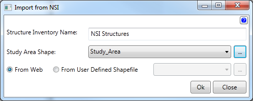

Import From NSI
Importing structures from the National Structure Inventory (NSI) is an easy way to get structures quickly. Supply a shapefile that will be used to get all the structures within that extent.
- Enter the name for the structure inventory.
- Select or browse to the shapefile that contains the structure inventory shapefile.
- Radio Buttons:
- Select From Web for Geo-FDA to access the NSI website to import the structures that are contained by your Study Are6a Shape.
- Select From User Defined Shapefile to import a previously downloaded NSI shapefile.
Example

After clicking the Ok button, the name of the structures will appear in the Study Tree.